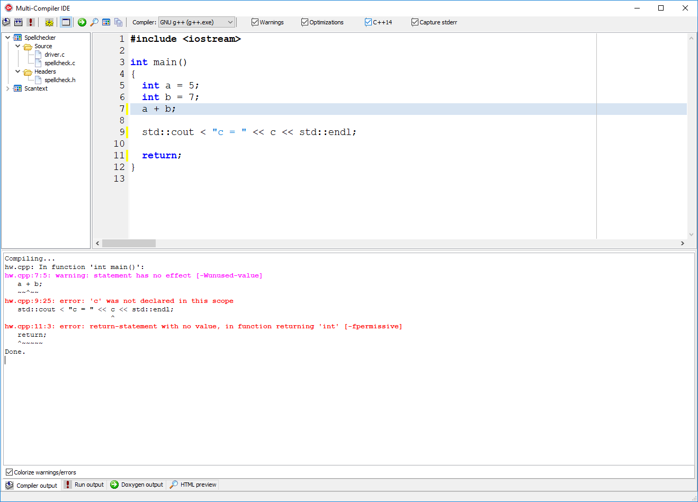
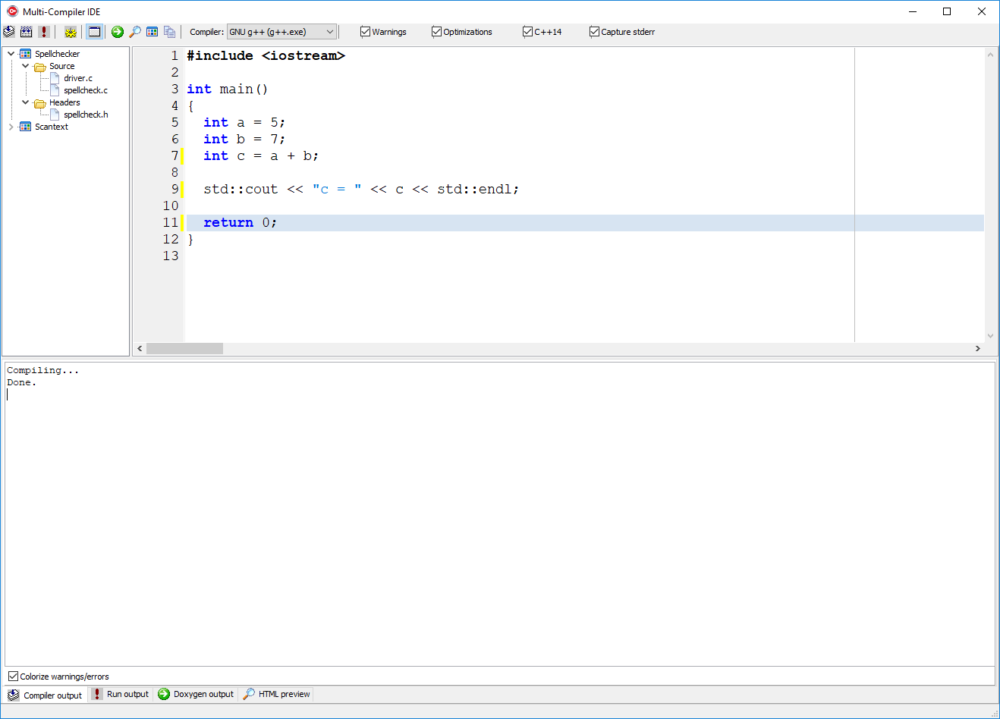
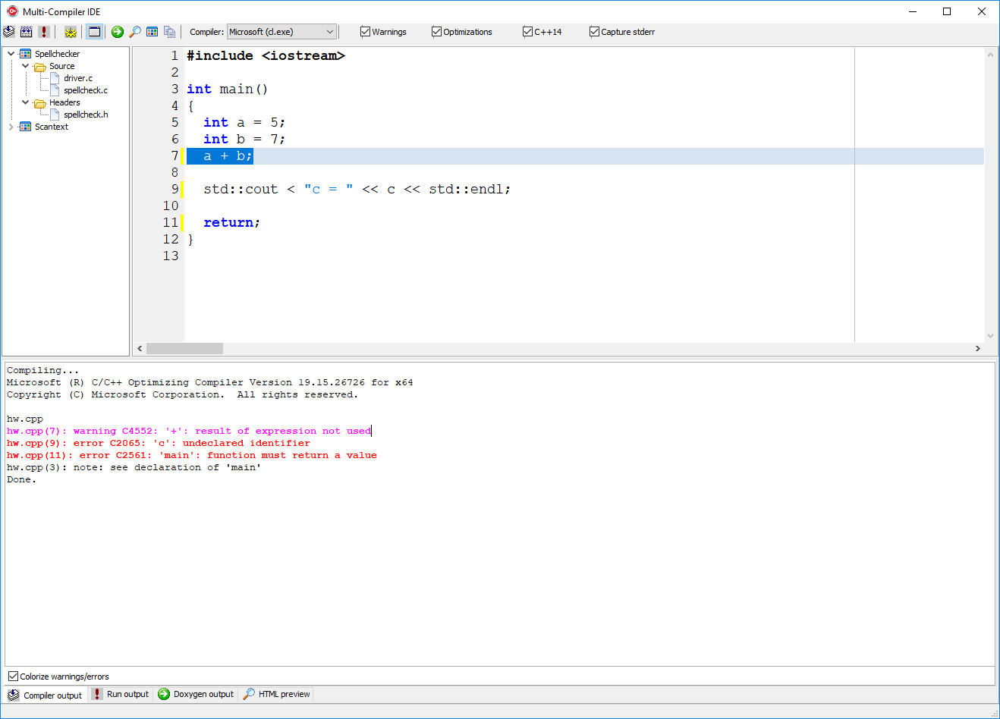
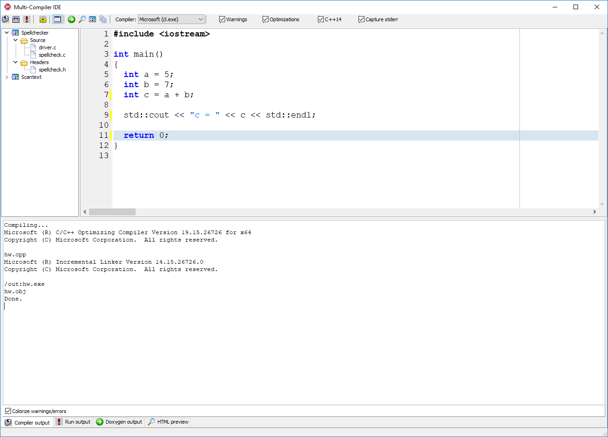
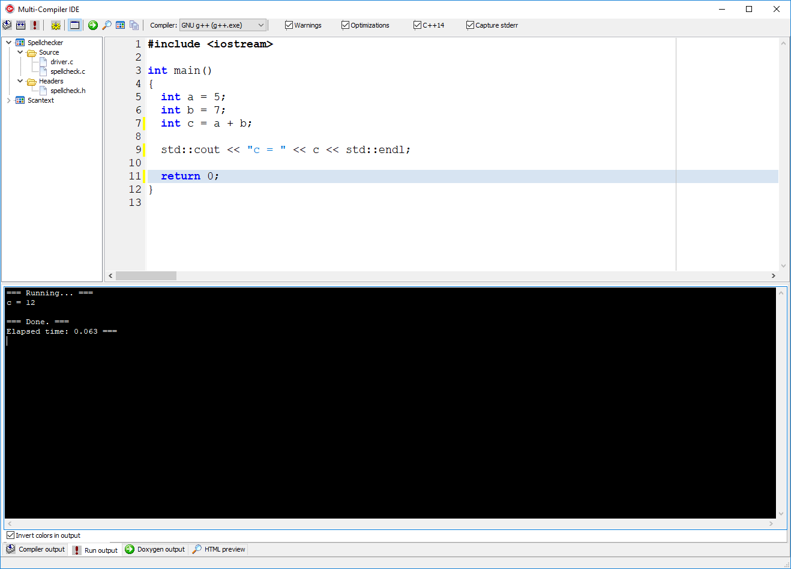
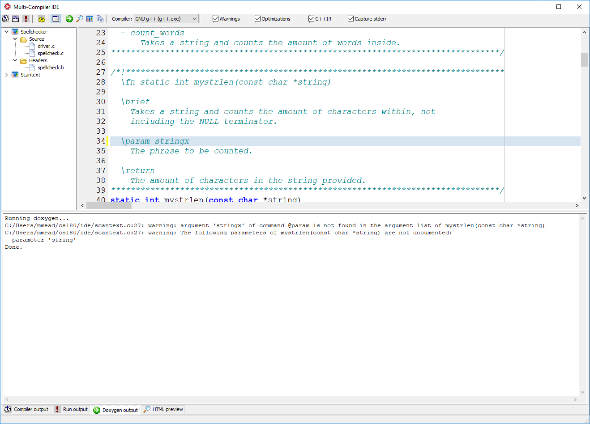
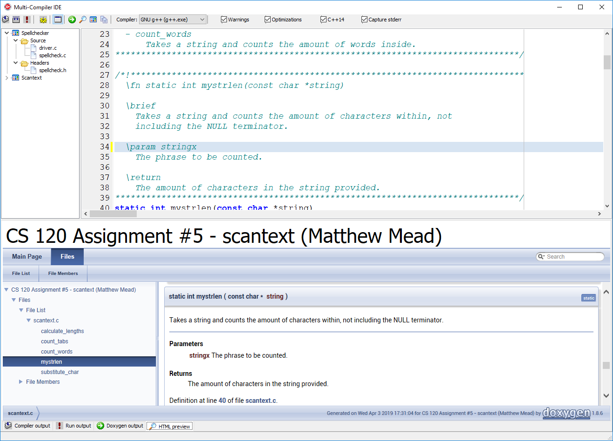

popen for Windows
This is a simple example of how you can execute a command line compiler (gcc, clang, cl, etc.) and have its output sent to a GUI window. This is kind of how many IDEs work. You can select the compiler from the drop-down box at the top and then compile or compile/link the code.(Click on an image to view full size)
Building the code using GNU g++ (with warnings/errors). The command-line compiler (cl.exe, gcc.exe, clang.exe, etc.) is run as a child process and its output is redirected (piped) back to the GUI, which displays it in the bottom window in the tab labeled Compiler output. Clicking the mouse on the error message in the bottom window will highlight the line in the source code in the top window.







Compiling/linking:
const int MAX_CMD_LINE = 4096;
void TMainWindow::Compile(const char *filename, bool link)
{
pgeMain->ActivePageIndex = 0;
char cmdLine[MAX_CMD_LINE]; // compiler command line
// Compile/Link or just compiling?
char *lstr = "";
if (!link)
lstr = "-c";
// If warnings are enabled (each compiler does it differently!)
char *gwarns = "";
char *mwarns = "";
char *bwarns = "";
if (chkEnableWarnings->Checked)
{
gwarns = "-Wall -Wextra -pedantic";
bwarns = "-w";
mwarns = "/W4";
}
// All compilers accept -O2!
char *optimize = "";
if (chkEnableOptimizations->Checked)
optimize = "-O2";
// Each compiler has its own command line format
if (Compiler_ == cmpMICROSOFT)
sprintf(cmdLine, "cl %s %s %s %s /EHsc", mwarns, optimize, lstr, filename);
else if (Compiler_ == cmpGNU)
{
AnsiString s = ChangeFileExt(filename, ".exe");
char *standard = "-ansi";
if (chkCPP14->Checked)
standard = "-std=c++14";
sprintf(cmdLine, "g++ %s %s %s %s %s -o %s", gwarns, optimize, lstr, standard, filename, s.c_str() );
}
else if (Compiler_ == cmpCLANG)
{
AnsiString s = ChangeFileExt(filename, ".exe");
char *standard = "-ansi";
if (chkCPP14->Checked)
standard = "-std=c++14";
sprintf(cmdLine, "clang++ %s %s %s %s %s -o %s", gwarns, optimize, lstr, standard, filename, s.c_str() );
}
else if (Compiler_ == cmpBORLAND)
sprintf(cmdLine, "bcc32 %s %s %s %s", bwarns, optimize, lstr, filename);
else
return; // unknown compiler (shouldn't happen)
std::string output; // Compiler's output
HANDLE process; // Process' handle returned from CreatePipe
// Start the compiler and capture its output
HANDLE in = POPEN(cmdLine, &process);
if (in)
{
// Read all of the compiler's output and put into a std::string
while (1)
{
const int chunksize = 128; // How much to read each time
char buffer[chunksize]; // Buffer to store output
DWORD bytesRead; // How much text was actually read
// Read a chunk of text (output) from the compiler
BOOL success = ReadFile(in, buffer, chunksize, &bytesRead, 0);
// This will trigger either when there are no more bytes to read
// or on error. (Need to handle the potential error at some point.)
if (!success)
break;
// Add the chunk of text to the string
for (DWORD i = 0; i < bytesRead; i++)
output.push_back(buffer[i]);
// Yield so the GUI is responsive (this could take a while)
Application->ProcessMessages();
}
// Convert the buffer of characters to a list of strings
TStringList *list = new TStringList();
OutputToStrings(output, *list);
mmoOutput->Lines->AddStrings(list);
delete list;
// Clean up
CloseHandle(process);
CloseHandle(in);
}
else
{
mmoOutput->Lines->Add(AnsiString("Failed! Command line: ") + cmdLine);
// TODO: Handle the error
}
}
// Runs a command (cmdline) and redirects its output to the app
void TMainWindow::CaptureOutput(const char *cmdline)
{
// Update GUI
mmoRunOutput->Clear();
Application->ProcessMessages();
pgeMain->ActivePageIndex = 1;
mmoRunOutput->Lines->Add("=== Running... ===");
// Keep track of how long the run took
double timediff;
clock_t start = clock();
HANDLE process;
HANDLE in = POPEN(cmdline, &process);
std::string output;
if (in)
{
// Read all of the process' output
while (1)
{
const int chunksize = 128; // How much to read each time
char buffer[chunksize]; // Buffer to store output
DWORD bytesRead; // How much text was actually read
// Read a chunk of text (output) from the compiler
BOOL success = ReadFile(in, buffer, chunksize, &bytesRead, 0);
// This will trigger either when there are no more bytes to read
// or on error. (Need to handle the potential error at some point.)
if (!success)
break;
// Add the chunk of text to the string
for (DWORD i = 0; i < bytesRead; i++)
output.push_back(buffer[i]);
// Yield so the GUI is responsive (this could take a while)
Application->ProcessMessages();
}
// Done reading
CloseHandle(process);
CloseHandle(in);
// Elapsed time (rough estimate)
timediff = (clock() - start) / (double)CLOCKS_PER_SEC;
// Put the output into a list of strings
TStringList *list = new TStringList();
OutputToStrings(output, *list);
mmoRunOutput->Lines->AddStrings(list);
delete list;
}
else
{
//fprintf(stderr, "error: %s", errorMessage);
timediff = (clock() - start ) / (double)CLOCKS_PER_SEC;
Beep();
}
// Update GUI
mmoRunOutput->Lines->Add("");
mmoRunOutput->Lines->Add("=== Done. ===");
char buf[100];
sprintf(buf, "Elapsed time: %.3f ===", timediff);
mmoRunOutput->Lines->Add(buf);
}
//---------------------------------------------------------------------------
// See MSDN article: "Creating a Child Process with Redirected Input and Output"
// for more information on this. There's no guarantee this link still works, but
// Google for it and you'll probably find something relevant.
//
// https://msdn.microsoft.com/en-us/library/windows/desktop/ms682499%28v=vs.85%29.aspx
HANDLE TMainWindow::POPEN(const char* cmdLine, HANDLE *process)
{
SECURITY_ATTRIBUTES sa;
sa.lpSecurityDescriptor = NULL;
sa.nLength = sizeof(sa);
sa.bInheritHandle = TRUE; // need this for the pipe
HANDLE pipeWrite; // Child will write to here
HANDLE pipeRead; // Parent will read from here
// Create a new pipe for child to communicate with parent
if (!CreatePipe(&pipeRead, &pipeWrite, &sa, 0 /* buffer size */))
return NULL;
// For CreateProcess
PROCESS_INFORMATION info;
STARTUPINFO si;
ZeroMemory(&si, sizeof(si));
si.cb = sizeof(si);
si.wShowWindow = SW_HIDE;
// No visible window, use redirected handles
si.dwFlags = STARTF_USESHOWWINDOW | STARTF_USESTDHANDLES;
// The child will write to the pipe instead of stdout.
si.hStdOutput = pipeWrite;
// We also want stderr to go to the pipe, since some compilers (e.g. g++)
// send their warnings and errors to stderr.
if (chkCaptureStderr->Checked)
si.hStdError = pipeWrite;
// Need to use wide-strings with CreateProcess (see MSDN docs)
std::wstring wcstr(MAX_CMD_LINE, L' ');
mbstowcs(&wcstr[0], cmdLine, MAX_CMD_LINE);
// Create the child process
BOOL success = CreateProcess
(
NULL, // application name
(wchar_t *)wcstr.c_str(), // command line
NULL, // process security attributes
NULL, // thread attributes
TRUE, // inherit handles
0, // creation flags
NULL, // use parent's environment
NULL, // use parent's current directory
&si, // [in]
&info // [out] will be filled in
);
// Close the write end of the pipe since we (parent) are only going to read
// from the child process.
CloseHandle(pipeWrite);
// If something went wrong (TODO: show error message)
if (!success)
return NULL;
*process = info.hProcess; // for process management
return pipeRead; // caller reads from here
}